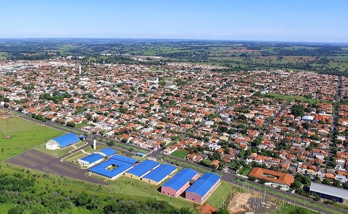

Docência
Professor do Instituto Federal de São Paulo, Campus Votuporanga, atuando em cursos das áreas de informática e computação — do ensino técnico à graduação.
Cartão de visita
Pai, Doutor, Professor, Maker, Gamer, Fotógrafo, Plastimodelista e …
Doutor em Ciência da Informação (UNESP Marília). Professor do Instituto Federal de Educação, Ciência e Tecnologia de São Paulo — Campus Votuporanga.

Atuação
Professor do Instituto Federal de São Paulo, Campus Votuporanga, atuando em cursos das áreas de informática e computação — do ensino técnico à graduação.
Coordenador do LabIF Maker Votuporanga: espaço de prototipagem, eletrônica, impressão 3D e cultura maker aberto à comunidade acadêmica.
Membro do Laboratório de Computação Aplicada à Automação (LCAA), com projetos que unem software, hardware e sistemas embarcados.
Membro do Núcleo de Pesquisa e Ensino em Microfabricação (NUPEM), que integra mecânica, elétrica, química e saúde no projeto de dispositivos microfluídicos.
Interesses
Tecnologia, programação, eletrônica e sistemas embarcados, cultura maker e DIY, inovação, fotografia e plastimodelismo. Da bancada do laboratório à sala de aula, a ideia é sempre a mesma: transformar conceito em coisa que funciona.
Contato